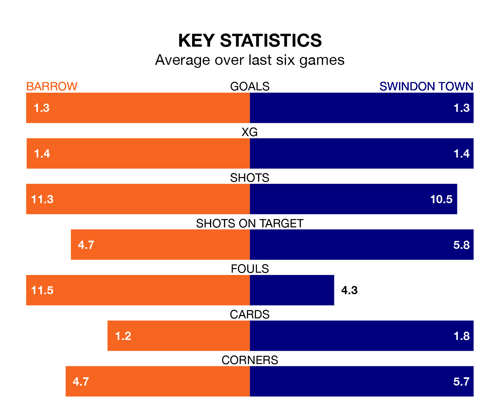

Swindon Town come to the SO Legal Stadium to play Barrow on Saturday in poor form, having collected just four points from their last six games.
The visitors have won one and drawn one of their last six fixtures, while the Bluebirds have three wins and two draws.
With 68 goals in 41 games so far this season, Swindon are scoring more than average in the league with 1.7 goals per game. But they are conceding more than average too, letting in 74 goals at a rate of 1.8 per game.
Barrow, meanwhile, are below average scorers, with 1.4 goals per game, compared to a league average of 1.5. They have conceded 1.1 goals per game.
With Paul Farman between the sticks, the Bluebirds can rely on one of the league's safest pair of hands. He has kept 14 clean sheets in his 38 appearances this season, and only two other 'keepers – Stockport County's Ben Hinchiffe and AFC Wimbledon's Alex Bass – have been able to prevent the opposition scoring on more occasions in EFL League Two.
In Town's net, Murphy Mahoney has four clean sheets in 23 games. He has conceded a goal every 57 minutes, 50% more often than the 86 minutes between goals for Farman.
The hosts are fifth in the table after 40 games, of which they have won 18 and drawn 13, earning 67 points.
The Robins are 14 places behind Barrow in 19th, with 12 wins and 11 draws putting them on 47 points.
In the last five years, Barrow and Swindon have played each other on five occasions. They won two each, and they drew once.
On average, the Bluebirds scored 1.2 goals and the Robins 0.6 in those matches.
Their last meeting was on December 16, when Barrow won 3-0 away.
Barrow's last match was on Monday, a 2-1 loss against Morecambe, with Ben Whitfield getting the goal for the Bluebirds.
Swindon lost 3-1 against Sutton United last time out, also on Monday, with Paul Glatzel on the scoresheet.
Saturday's match will be refereed by Ben Toner, who has taken charge of eight EFL League Two games so far this season, issuing one red card and booking 39 players. He has awarded three penalties.
The last Barrow game Toner refereed was a 1-1 home draw with Notts County on October 7. He is yet to oversee a match featuring Swindon this season.
Updated: 16:41 (UTC), 04/04/24